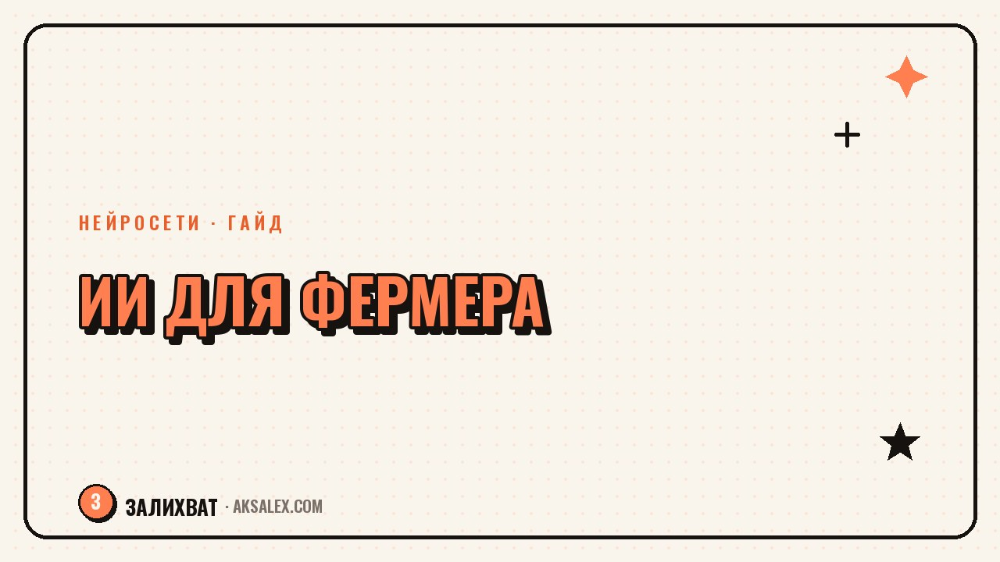

Нейросети для фермера: урожай, финансы и продажи

У фермера решения завязаны на погоде, рынке и состоянии земли - ошибиться дорого, а времени на анализ почти нет. Нейросети для фермера не заменят агронома и не предскажут заморозки точнее метеостанции, но они отлично разбирают бумажную и расчётную часть: учёт затрат на поле, план севооборота, тексты для продажи урожая оптовикам. В статье - какие сервисы реально экономят время в хозяйстве, без фантазий про роботов-тракторов.
Планирование посевов и севооборота с нейросетью
Севооборот - это расчёт, который держится на памяти и опыте: что росло на поле в прошлые годы, какие культуры истощают почву, что лучше сажать после подсолнечника. Нейросеть не заменит агрономическую экспертизу, но может быстро прикинуть варианты, если задать ей исходные данные: тип почвы, культуры за последние 2-3 года, площадь поля.
Как задать запрос, чтобы получить рабочий ответ
Опиши нейросети конкретные условия: регион, тип почвы, какие культуры сажал последние сезоны, какая техника есть в хозяйстве. Попроси несколько вариантов севооборота на 3-4 года с объяснением, почему именно так. Дальше этот план проверяется со своим агрономом или хотя бы со здравым смыслом - готового решения без проверки не бери.
- Варианты севооборота под конкретную почву и регион
- Расчёт примерных сроков посева и уборки
- Подсказки по совместимости культур на одном поле
- Разбор, какие удобрения подходят под культуру
- Список рисков для конкретной культуры в этом сезоне
Учёт расходов и финансовое планирование хозяйства
В небольшом фермерском хозяйстве бухгалтерия часто держится на тетради или таблице в телефоне, и это нормально, пока не начинаются проблемы с отчётностью или кредитом. Нейросеть помогает навести порядок: превратить список трат в понятную таблицу, посчитать себестоимость килограмма продукции, прикинуть, выгодно ли расширять поле под новую культуру.
Загружаешь в нейросеть список расходов за сезон - семена, топливо, удобрения, аренда техники, зарплата сезонным работникам - и просишь посчитать себестоимость урожая на гектар. Это помогает понять реальную маржу перед продажей, а не продавать по привычной цене, которая держится годами без пересчёта.
Фермер, который считает только по памяти, годами может работать в минус и не замечать этого, пока не сядет и не сложит цифры в одну таблицу.
Какие сервисы выбрать: сравнение для хозяйства
Разным задачам подходят разные инструменты - от обычного текстового помощника до специализированных сервисов для сельского хозяйства. Ниже - рабочая таблица, с чего начинать под конкретную задачу в хозяйстве.
| Задача | Сервис | Что получаешь |
|---|---|---|
| Расчёт себестоимости и расходов | ChatGPT, Excel с формулами от ИИ | Таблица затрат и маржи на гектар |
| Планирование севооборота | ChatGPT, Claude | Варианты плана на несколько лет |
| Мониторинг полей по снимкам | Cropio, OneSoil | Карты состояния посевов по спутнику |
| Тексты для продажи оптовикам | ChatGPT, Яндекс Алиса Pro | Коммерческое предложение, объявление |
| Прогноз погоды для поля | Яндекс Погода, Windy | Детальный прогноз по координатам поля |
Продажа урожая и поиск покупателей
Продать урожай выгодно - отдельная задача, которая требует текстов, объявлений и переговоров с оптовиками или сетями. Нейросеть помогает составить внятное коммерческое предложение: объём, сроки, условия доставки, цена - без воды и без лишней скромности в описании качества продукции.
Пошагово: как подготовить предложение для оптовика
- Собери точные цифры - объём урожая, сроки хранения, условия доставки
- Попроси нейросеть собрать короткое письмо под конкретного покупателя
- Добавь фото продукции и условия оплаты в текст
- Проверь цену по рынку перед отправкой предложения
- Сохрани шаблон письма, чтобы не писать заново каждый раз
Хорошо работает и обратный ход: попросить нейросеть составить список вопросов, которые нужно задать покупателю перед сделкой - про условия оплаты, штрафы за задержку вывоза, кто оплачивает транспорт. Это экономит нервы при переговорах с крупными сетями, где условия прописаны мелким шрифтом.
Где нейросеть не поможет фермеру
Нейросеть не заменит агронома, который видит состояние листа своими глазами, и не предскажет заморозки точнее метеостанции с датчиками прямо на поле. Если решение касается здоровья растений или животных, финальную проверку всегда делает специалист, а не текстовый помощник. ИИ хорош там, где нужно быстро посчитать, составить текст или прикинуть вариант - а не там, где нужен глаз агронома или ветеринара.
Частые вопросы
Может ли нейросеть составить план севооборота для конкретного поля?
Да, если дать ей точные данные - тип почвы, культуры за прошлые сезоны, регион. Она предложит несколько вариантов плана, но финальное решение стоит сверить со своим агрономом, особенно если хозяйство крупное.
Какие нейросети подходят для учёта расходов в небольшом хозяйстве?
Подойдёт обычный ChatGPT или Claude - загружаешь список трат текстом, просишь собрать таблицу и посчитать себестоимость на гектар. Для более сложного учёта можно подключить готовые сельскохозяйственные сервисы.
Помогают ли нейросети с мониторингом полей по спутниковым снимкам?
Да, сервисы вроде Cropio или OneSoil используют нейросети для анализа состояния посевов по спутниковым данным - показывают проблемные участки поля и помогают спланировать обработку.
Можно ли с помощью ИИ составить коммерческое предложение для оптовика?
Да, это одна из самых удобных задач для нейросети - даёшь объём, сроки, условия, и получаешь готовый черновик письма. Дальше остаётся проверить цифры и добавить свои детали.
Заменят ли нейросети агронома в фермерском хозяйстве?
Нет, агроном оценивает состояние растений на месте и учитывает множество нюансов конкретного поля, которые нейросеть не видит. ИИ ускоряет расчёты и подготовку документов, но не заменяет живую экспертизу на земле.
Раз тема оказалась полезной, вот что почитать следующим. Нейросети помогают актёру готовиться к кастингам быстрее: от разбора роли до самопрезентации и портфолио.
Читать статью →а не вручную